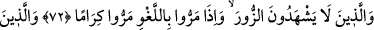
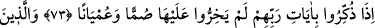
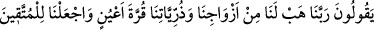
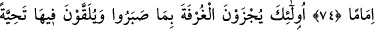
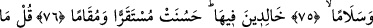
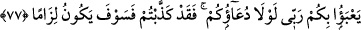
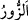
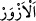
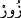

SABRETMELERİNE KARŞILIK
EN YÜKSEK MAKAM
72. (O kullar), yalan yere şahitlik etmezler, boş sözlerle karşılaştıklarında vakar
ile (oradan) geçip giderler.
73. Kendilerine Rablerinin âyetleri hatırlatıldığında ise, onlara karşı sağır ve kör
davranmazlar;
74. (Ve o kullar): “Rabbimiz! Bize gözümüzü aydınlatacak eşler ve zürriyetler
bağışla ve bizi takvâ sâhiplerine önder kıl!” derler.
75. İşte onlara, sabretmelerine karşılık cennetin en yüksek makamı verilecek,
orada hürmet ve selâmla karşılanacaklardır.
76. Orada ebedî kalacaklardır. Orası ne güzel bir yerleşme ve ikâmet yeridir.
77. (Rasûlüm!) De ki: (Kulluk ve) yalvarmanız olmasa, Rabbim size ne diye
değer versin? (Ey inkârcılar! Size Rasûl’ün bildirdiklerini) kesinkes yalan
saydınız; onun için azâb yakanızı bırakmayacaktır!
“(O kullar), yalan yere şahitlik etmezler,”
Şehâdet; gözle görerek ve müşâhede ederek bir hâdisenin doğruluğunu haber
vermektir.
“
” yalan demektir. Asıl anlamı, bâtılı hak olduğunu vehmettirecek şekilde
yaldızlayıp süslemektir. Râğıb der ki: “
” meyilli, eğri demektir. Yalana asıl
yönünden saptığı için “
” denmiştir.”
Fıkıh imamları yalan yere şahitlik yapanın cezâlandırılması konusunda ihtilâf ettiler.
Ebû Hanîfe (r.h.) “Tâzir cezâsı verilmez, kavmi arasında tutulur, insanlara onun yalan
yere şahitlik yaptığı söylenir.” demiştir. Üç imam ise “Tâzir cezâsı verilir, sonra kavmi
arasında tutulur ve insanlara onun yalancı şahitlik yaptığı tanıtılır.” demişlerdir. İmam
Mâlik, “Camîlerde, çarşılarda ve insanların toplandıkları yerlerde ilân edilir” demiştir.